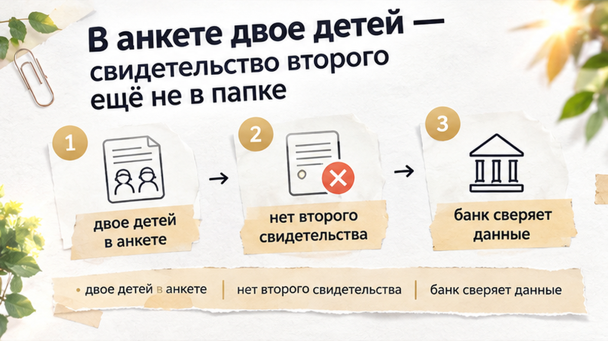
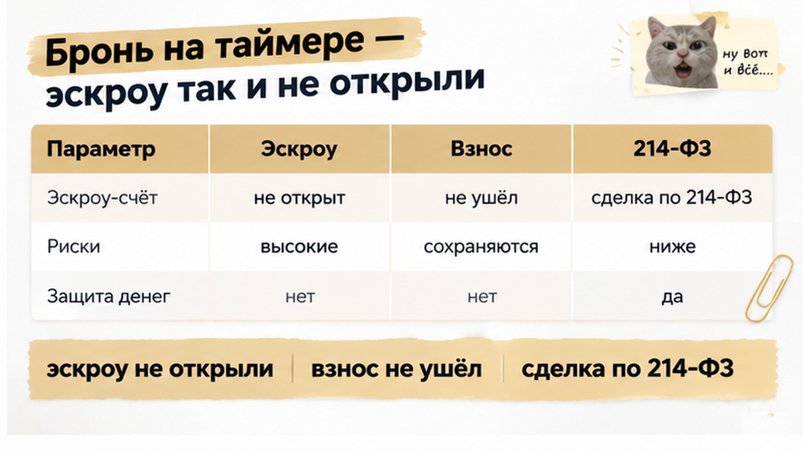
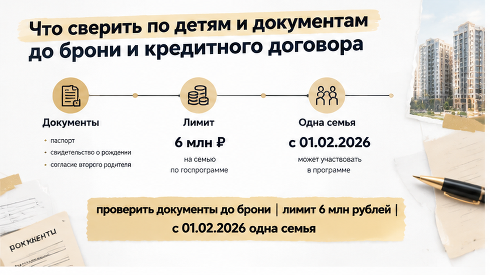
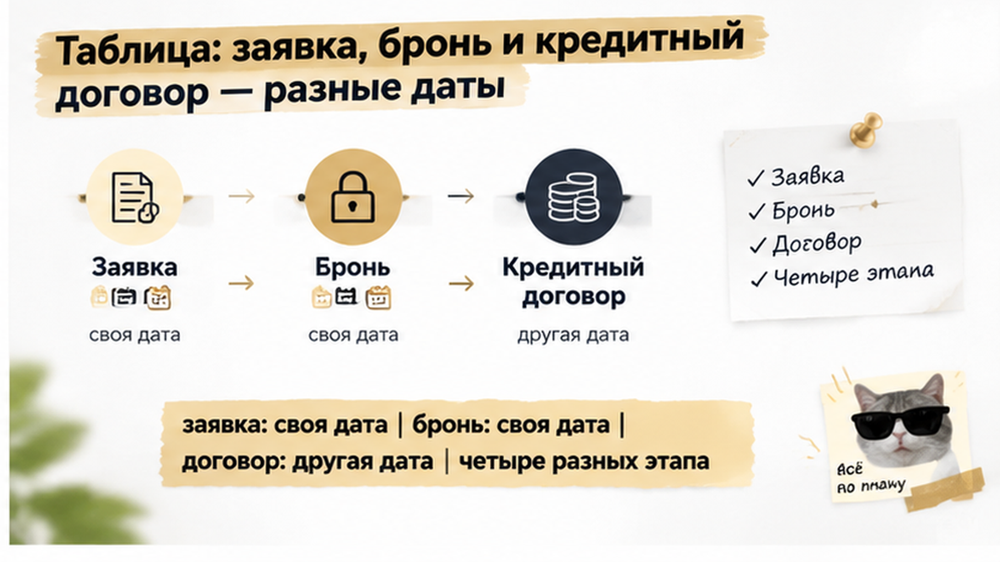

За 5 дней до открытия эскроу банк поставил на паузу семейную ипотеку тюменской семьи: риск-контроль запросил свидетельство о рождении второго ребёнка, а его в папке не было. Квартира в новостройке уже стояла в брони у застройщика, дата ДДУ была вписана в календарь, а первоначальный взнос лежал отдельно и ждал своего дня. В анкете родители честно указали двоих детей, но документ был только на старшего: регистрацию рождения младшей дочери ещё не закончили. Одобрение, которое вся семья считала решённым делом, повисло в воздухе. Бронь у застройщика тем временем тикала по часам, и продлевать её без ответа банка никто не собирался.
Я Святослав Шакин, The Риэлтор, Тюмень. Если вы сейчас между одобрением и эскроу и не уверены, что документы по семье совпадают с анкетой, напишите мне, пока деньги ещё у вас: Telegram или MAX.
Со стороны сделка выглядела как из учебника. Квартира в строящемся доме под ДДУ, сумма в пределах лимита семейной программы для Тюмени. На руках предварительное одобрение банка и бронь у застройщика с назначенной датой договора. Деньги на взнос отложены, паспорта, справки о доходе и свидетельство о рождении старшего ребёнка собраны в одну папку.
Такое ощущение «уже почти всё» я чаще всего вижу у покупателей новостроек прямо перед финишем. Одобрение принимают за решение, хотя это только первый шаг. Перед кредитным договором банк ещё раз смотрит на заёмщика, и поменяться может что угодно. Бывает, что ставку поднимают накануне ДДУ, а бывает, что одобрение снимают за шесть дней до договора. Здесь условия никто не трогал. Сделка споткнулась о бумагу, которой просто ещё не было.

Младшая дочь родилась незадолго до подачи заявки. Родители не стали хитрить и вписали в анкету двоих детей, хотя прикладывать на второго ребёнка было нечего. На предварительном одобрении это никого не смутило: банк посчитал семью по анкете, и скоринг прошёл.
Только для банка «двое детей» в заявке — это слова, а свидетельство о рождении — их подтверждение. Сведения о семье по правилам программы должны быть достоверными, и расхождение между анкетой и папкой банк обязан проверить до выдачи льготного кредита. Родители считали свидетельство формальностью в духе «донесём потом». Менеджер застройщика про него не спросил: его задача довести лот до ДДУ, а не сверять документы с анкетой.
Никто не соврал и никто не ошибся со зла. Просто между заявкой и выдачей кредита осталась дыра размером в один документ, и банк увидел её раньше семьи. Материнского капитала и долей детей в старой квартире тут нет, это другая история, где эскроу тоже не открыли, но по иной причине. Здесь всё проще и оттого обиднее: состав семьи в анкете обогнал документы.
Звонок пришёл в понедельник, около одиннадцати утра. Семья в этот момент выбирала шторы для будущей детской. Менеджер банка сказал коротко: риск-контроль запросил свидетельство о рождении второго ребёнка или актуальные сведения о регистрации рождения. Пока документа нет, предварительное одобрение стоит на паузе. До открытия эскроу оставалось пять дней.
«Так ребёнок же указан в анкете, одобрение уже есть», — переспросили родители. Для банка это разные вещи. Анкета — это слова заёмщика, а свидетельство их подтверждает. Скоринг посчитал семью с двумя детьми, но право на семейную ипотеку подтверждает только документ. Окончательный пакет определяет банк, а не примерный список с сайта. Состав семьи и возраст детей оценивают на дату кредитного договора, а не на день заявки или брони.
Почему риск-контроль здесь не уступает, понять несложно. С 1 февраля 2026 года действует правило «одна семья — одна льготная ипотека». За недостоверные сведения о семье ставку могут повысить уже по выданному кредиту. Поэтому банку проще остановить сделку до выдачи, чем разбираться после. 28 сентября 2026 года я уточнил позицию у сотрудника ДОМ.РФ: окончательное решение банк принимает после полного пакета документов.
Скажу честно: не каждый банк запрашивает свидетельство за пять дней до эскроу. Одни требуют его на старте, другие при подготовке договора. Здесь запрос пришёл на самом финише, и от этого было больнее всего. Похожий стоп я разбирал в истории, где за два дня до эскроу в реквизитах счёта оказалось чужое юрлицо. Причина там другая, но логика та же: банк вправе проверить всё до выдачи и этим правом пользуется.
Вторая половина проблемы ждала в офисе продаж. После продления бронь действовала около 72 часов. Это условие конкретного застройщика, а не норма рынка. Менеджер сказал прямо: без решения банка продлить не получится, а в свободной продаже квартиру заберёт следующий покупатель.
У семьи было три дня и один вопрос, на который в офисе никто не мог ответить. Успеет ли завершиться регистрация рождения и когда документ будет на руках? Банк сроки не двигал, застройщик тоже. Между ними стояли родители с детской коляской в коридоре офиса продаж.

Эскроу так и не открыли. Но посмотрим трезво: деньги на счёт не ушли, кредитный договор не подписан, ДДУ не зарегистрирован. Пока эскроу не открыт, расчёты по договору с застройщиком даже не начинаются. Предварительное одобрение, открытие счёта и выдача кредита — три отдельных шага, и на каждом банк вправе остановиться. Семья потеряла время и нервы, а первоначальный взнос остался у неё.
Вернут ли деньги за бронь, решает только текст договора бронирования. Устное «вернём, не переживайте» от менеджера ничего не значит. Я сел с родителями и прочитал пункт о возврате вместе с ними. Формулировку «при отказе банка в выдаче кредита» пришлось уточнять отдельно, потому что пауза в одобрении — ещё не отказ. Безусловного возврата никто не гарантирует, поэтому такие пункты я читаю до оплаты, а не после.
Если банк за 5 дней до эскроу требует свидетельство о втором ребёнке, а документа ещё нет — вы бы торопили регистрацию или отказывались от лота? Напишите в комментариях, как поступили бы на месте этой семьи.

Правило простое: что записано в анкете, то должно лежать в папке. Фраза «ребёнок есть, документ донесём» звучит безобидно, но именно с неё риск-контроль и ставит паузу. Банк проверяет право, которое подтверждено бумагой, а не обещание принести её потом. Поэтому до оплаты брони я сажусь с семьёй и проверяю одно: у каждого ребёнка из анкеты на руках свидетельство о рождении, а не «оно в процессе». Если регистрация рождения ещё идёт, дату сделки я считаю от дня, когда документ будет готов, а не от таймера застройщика.
Дальше я смотрю возраст детей. Банк пересчитывает его на момент выдачи кредита, а не по цифрам из анкеты на старте. Если сделка съедет на месяц, условия могут перестать сходиться, и узнать об этом лучше заранее, а не в офисе продаж. Потом считаю деньги. В Тюмени льготная часть ограничена 6 млн ₽, ставка до 6%, взнос от 20%. Всё, что сверх лимита, идёт по рыночной ставке, а при ключевой 14% с 24.07.2026 это заметно меняет платёж. Его пересчитывают до брони, а не после.
Ещё до выбора квартиры я выясняю, не оформлял ли кто-то из супругов льготную ипотеку раньше: с февраля 2026 на семью положена только одна такая сделка, и за неточные сведения ставку могут поднять уже по выданному кредиту. Последним читаю договор бронирования: сколько длится бронь, как её продлевают и что будет с деньгами при отказе банка. Верю только тексту договора. Устное «вернём, не переживайте» ничего не стоит.
Есть деталь, о которой мало кто знает. Для семей с двумя детьми, где нет ребёнка до 6 лет, в 35 регионах действуют свои ограничения. Тюменской области в этом перечне нет, но я всё равно проверяю этот пункт до заявки. И ещё одно, чтобы не путать: ипотечные каникулы при рождении ребёнка тут ни при чём. Они касаются кредита, который уже выдан, а не права на семейную ипотеку.
Хотите сверить документы семьи с требованиями банка до брони? Пришлите состав семьи и выбранный лот, и я скажу, чего не хватает. Святослав Шакин, The Риэлтор, Тюмень.

Семья думала, что это одно событие, а их на самом деле четыре. У каждого своя дата и своя проверка.
| Этап | Что происходит | Что проверяют | Что может сорваться |
|---|---|---|---|
| Заявка и предварительное одобрение | Банк смотрит анкету и скоринг | Доход, кредитная история, заявленный состав семьи | Одобряют по анкете, бумаги дозапрашивают позже |
| Бронь у застройщика | Лот снимают с продажи на срок из договора | Банк ничего не проверяет, это договорённость с застройщиком | Таймер идёт, даже если банк поставил паузу |
| Кредитный договор и ДДУ | Банк подтверждает право на программу | Полный пакет, включая свидетельства о рождении, и возраст детей на эту дату | Нет документа — нет льготы, сделка встаёт |
| Открытие эскроу | Деньги по ДДУ идут на отдельный эскроу-счёт | Сделка уже одобрена окончательно | Пока эскроу не открыт, деньги у семьи и решение за ней |
Бронь и кредитный договор живут в разных календарях, и в этой истории это сыграло семье на руку. Деньги на эскроу не ушли, первоначальный взнос остался на своём счёте, и решение осталось за родителями: ждать свидетельство и договариваться о продлении или отпустить лот. В истории, где накануне ДДУ банк поднял ставку, у покупателя такой свободы было куда меньше.
Перед следующей бронью я советую две вещи. Сверьте анкету с документами, которые уже лежат у вас на руках. И не платите за бронь, пока банк письменно не подтвердит, что пакет полный на дату кредитного договора. Рисков здесь не больше обычного, просто каждую проверку надо сделать вовремя. Когда семья готова, я подключаюсь до брони и веду сделку в новостройке от первого звонка до регистрации ДДУ.